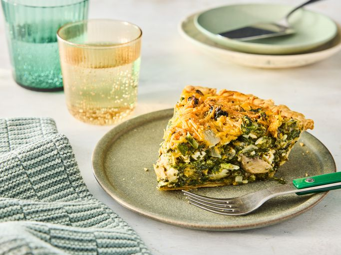

Spinach Quiche
Description:
In this recipe, we are going to create the world-famous Spinach Quiche with our own little twist!
This is a more advanced recipe, and instructions will need to be followed carefully!
Ingredients:
- ½ cup butter
- 1 small onion, chopped
- 3 cloves of garlick, chopped
- 1 (10 ounce) package of frozen chopped spinach, thawed and drained
- 1 (4.5 ounce) can of mushrooms, drained
- 1 (6 ounce) package of herb and garlic feta, crumbled
- 1 (8 ounce) package of shredded Cheddar cheese, divided
- salt and pepper to taste
- 1 deep-dish (9-inch) pie crust
- 4 large eggs
- 1 cup of dairy milk
Steps:
These are the steps taken to make this delicious, rich, luscious quiche:
- Gather all ingredients and preheat the oven to 375℉ (190℃).
- Melt butter in a medium skillet over medium heat. Add the onion and garlic.
Proceed to saute until lightly browned (approx. 7 minutes)
- Stir in spinach, mushrooms, feta, and the ½ cup of cheddar. Season with salt & pepper
- Spoon the mixture into the pie crust
- whisk the eggs and milk together in a medium bowl until well combined. Season with salt & pepper
- Pour over the spinach mixture (made from steps 2-4), allow the eggs to thoroughly combine with
the spinach mixture.
- Bake in the preheated oven for approx 15 minutes.
- Sprinkle the top with remaining cheddar, and bake for another 35-40 mins. or until the
centre is set.
- Allow to cool before slicing and serving. Eat like a king/queen!
Back To Home